2024 · Brand · Product · Spatial
VEGIC 魔蔬 —— 即期蔬果的魔法工廠
Supermarkets throw produce out the day it stops looking perfect. VEGIC is a factory that takes it in: pigment is pressed from the vegetables, children paint with it, and what they paint gets baked and eaten. 超市把賣相不好的蔬果丟掉。VEGIC 是一間把它們收下來的工廠 —— 從蔬果提煉出色素,調成麵糊給小朋友畫畫,烤出來就能吃掉。
- Year
- 2024
- Scope
- Brand identity · Product design · Spatial design
- Team
- Four-person student project — 賴亭諭、黃建銘、黃采妍
- Advisors
- 朱谷熹、謝子良
- Drawings
- 1F & 2F plans, three elevations — S 1:100
Space 場域
Two floors. You come in past the drop-off point for near-expiry produce, walk through pigment extraction and the exhibition wall, and end up at the bake-your-own-drawing workshop and the playground. 一樓從入口的即期蔬果回收站開始,穿過色素提煉與展覽互動區, 走到烤畫 DIY 區和 VEGIC PARK;二樓是親子畫室與空中滑梯。
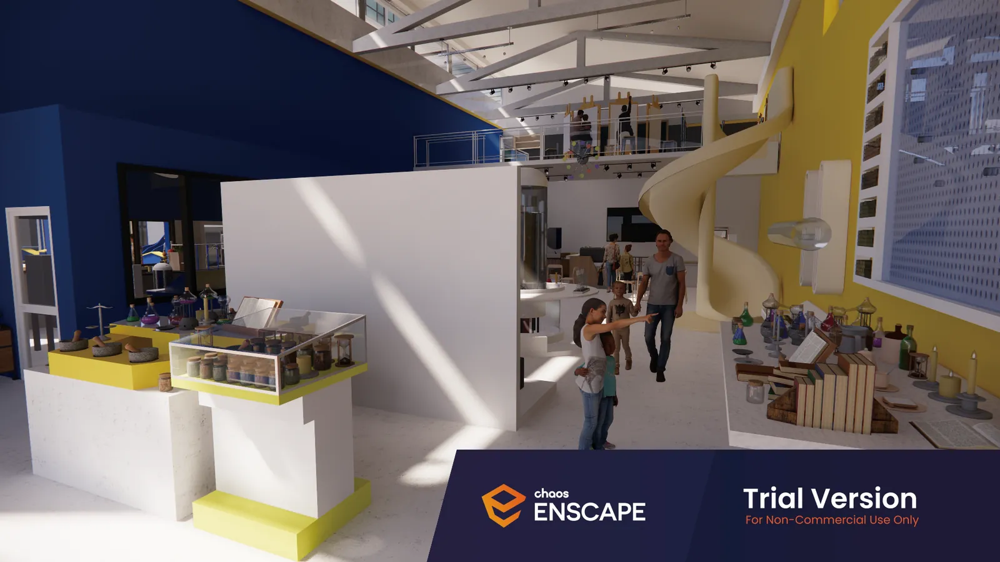
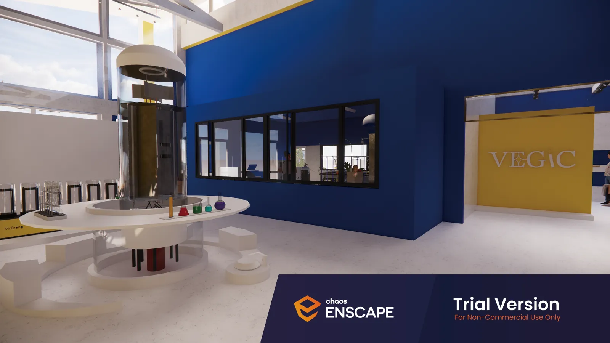
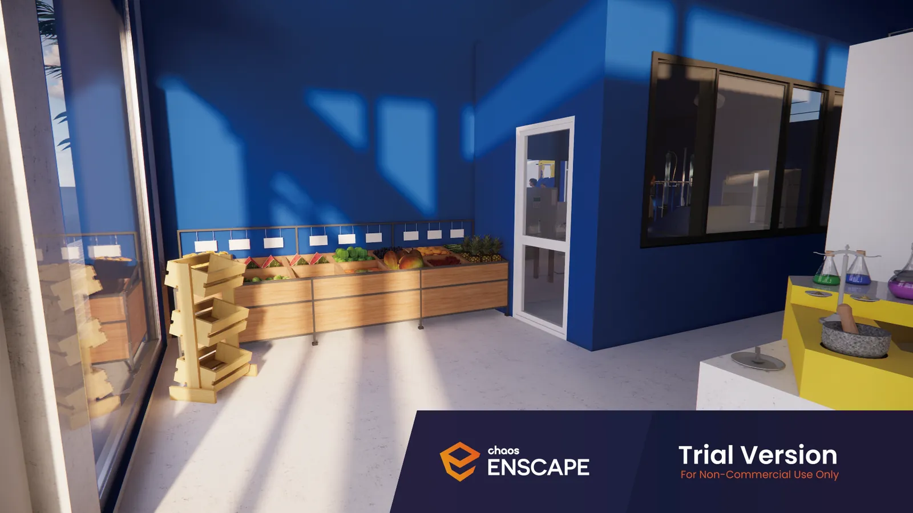
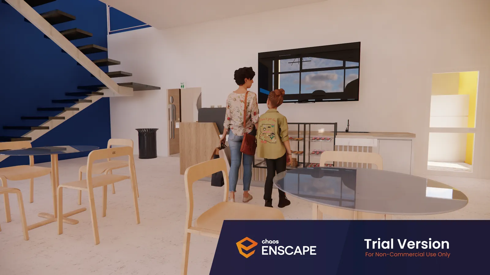
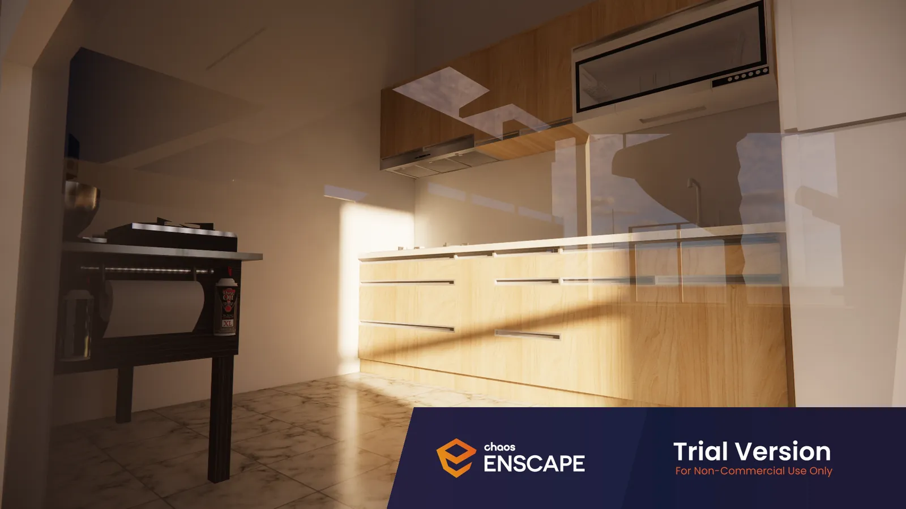
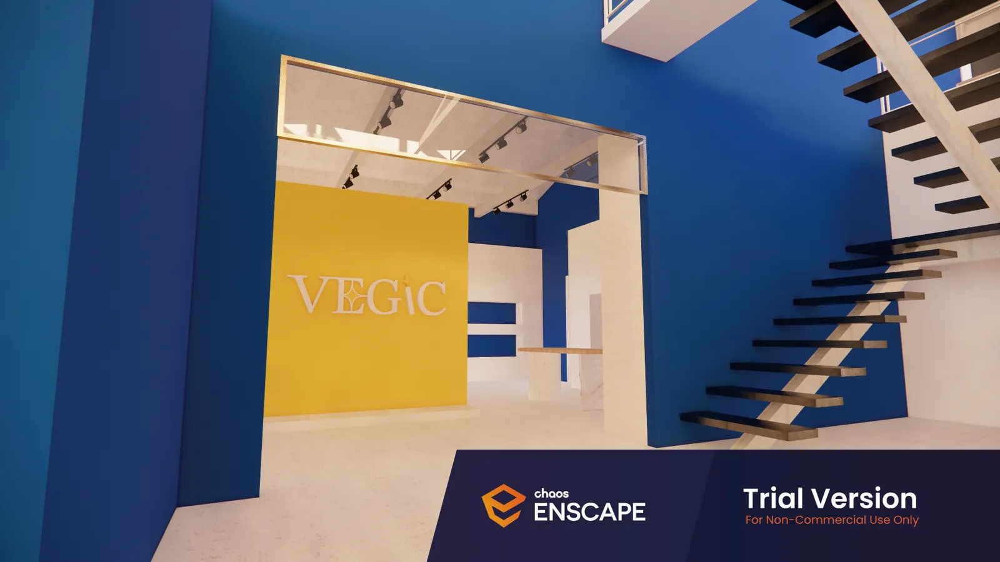
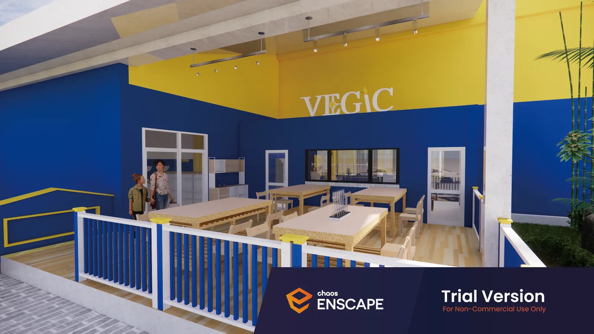
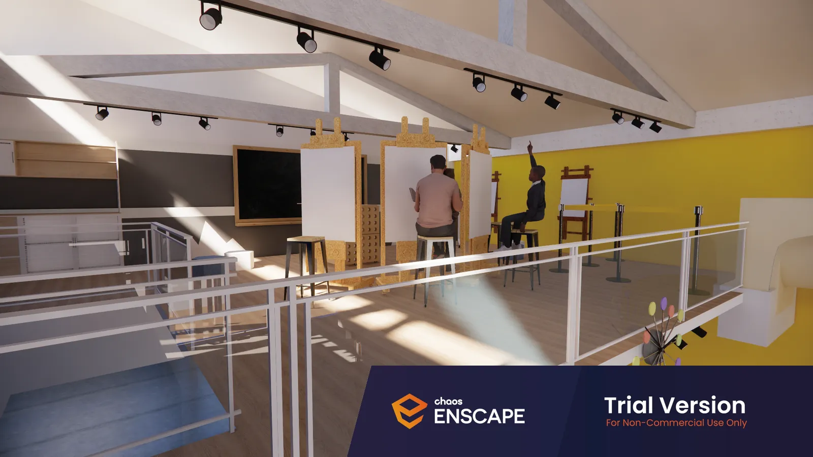
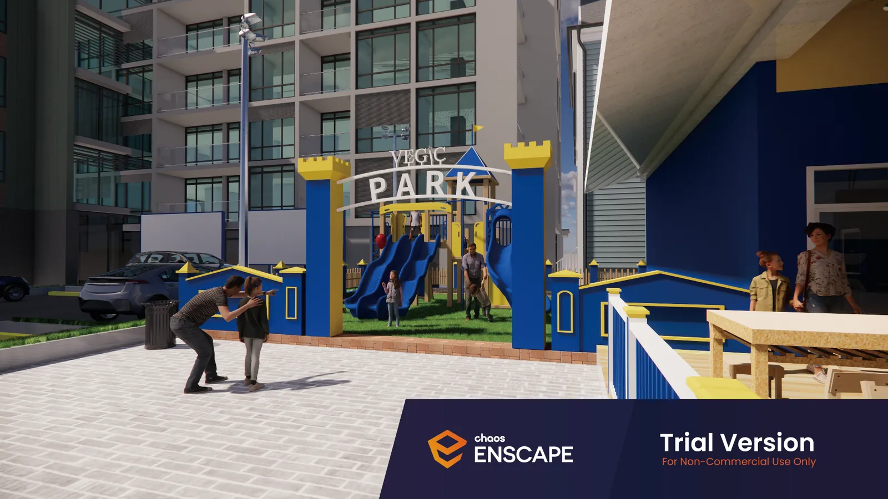
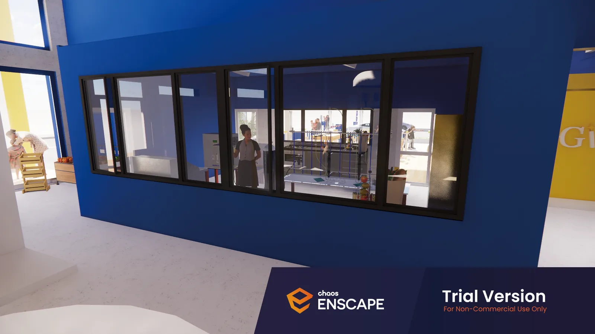
Product 產品
A pen shaped like a wand. Press the crystal ball on top to draw batter up into the barrel, screw the cap on, and start drawing. 魔蔬筆:筆身結合法杖造型與水晶球。按壓上方水晶球把麵糊吸進筆內, 轉上筆蓋就能開始畫。
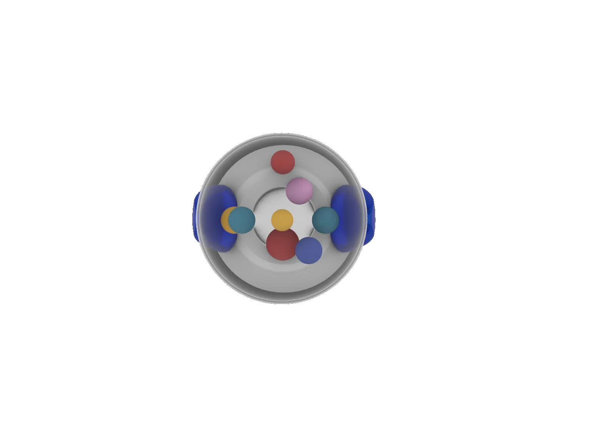
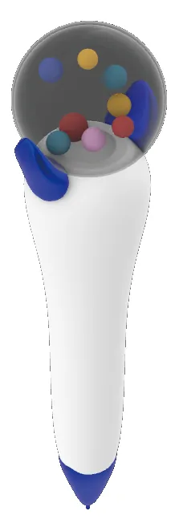
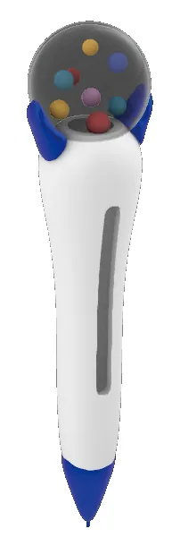